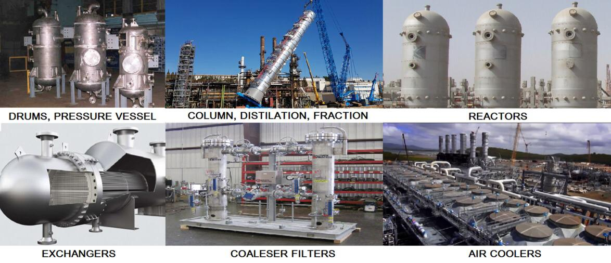

Pressure vessels
Heat exchangers
Boilers
Pressure Piping
HRSG’s
Transformers
Tanks, Silos, Vessels & furnace

supply and installation of Shell & Tube Heat Exchangers, Air cooled Heat Exchangers, Pressure Vessels, Process Equipment's, Skid Packages, Boilers, Storage Tanks, Steel structures, Repairs and alterations of Pressure Vessels and Heat Exchangers, All types of Piping and structural, Retrofitting of engineering products including related accessories for Oil & Gas, Petrochemical, Power, Water, Marine and Food & Beverage Industries. We these equipment which are certified with ASME “U”, “U2”, “S” & “PP” stamps, National Board “R” & “NB” certifications